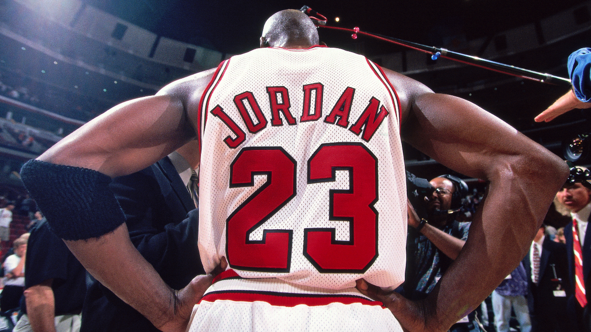

Jordan enrolled at the University of North Carolina at Chapel Hill in 1981 and soon became an important member of the school's basketball team. UNC won the NCAA Division I championship in 1982, with Jordan scoring the final basket needed to defeat Georgetown University. He was also singled out as the NCAA College Player of the Year in 1983 and in 1984.
Jordan left college after his junior year to join the NBA in 1984. In 1985, Jordan finished his bachelor's degree in geography as he continued to play basketball professionally.
Jordan began his professional basketball career when he was drafted by the Chicago Bulls in 1984. He was the third overall pick, behind Hakeem Olajuwon, who was selected first by the Houston Rockets, and Sam Bowie, taken by the Portland Trail Blazers; the draft also featured legendary players John Stockton and Charles Barkley.
Jordan soon proved himself on the court. He helped the team make the playoffs and scored an average of 28.2 points per game that season. For his efforts, Jordan received the NBA Rookie of the Year Award and was selected for the All-Star Game.
While his second season was marred by injury, he was breaking new ground on the court during the 1986-87 season. He became the first player since Wilt Chamberlain to score more than 3,000 points in a single season.
By the late 1980s, the Chicago Bulls were quickly becoming a force to be reckoned with, and Jordan was an instrumental part of the team's success.
The Bulls made it to the Eastern Conference Finals in 1990 and won their first NBA championship the following year by defeating the Los Angeles Lakers. Jordan was well known by then for his superior athleticism on the court and for his leadership abilities.
In 1992, the Chicago Bulls beat the Portland Trail Blazers to win their second NBA championship. The team took their third championship the following year, dominating in the basketball world.
Following a short stint in minor league baseball, in March 1995 Jordan returned to the basketball court for the Chicago Bulls. He came back even stronger the following year, averaging 30.4 points per game to lead the Bulls to a then-record 72 regular-season wins before they defeated the Seattle SuperSonics for the NBA championship.
Chicago nearly matched the previous year's record with 69 wins in 1996-97, a season that ended with a six-game win over the Utah Jazz in the NBA Finals. The two teams faced each other again for the championship in 1998, with Jordan sinking the winning shot in Game 6 to claim his sixth and final NBA title.
Michael Jordan / Quotes
- "One day, you might look up and see me playing the game at 50. Don't laugh. Never say never, because limits, like fears, are often just an illusion."
- "Some people want it to happen, some wish it would happen, some dream it would happen, others make it "
- "I've failed over and over and over again in my life and that is why I'am successful,
- Talent wins games, but teamwork and intelligence wins championships."
- "I've always believed that if you put in the work, the results will come."
- "Be true to the game, because the game will be true to you. If you try to shortcut the game, then the game will shortcut you. If you put forth the effort, good things will be bestowed upon you. That’s truly about the game, and in some ways that’s about life too."
Work/Acommplishments
Michael Jordan accomplishments a lot in his career. Here are some of his accomplishments
- Rookie of the Year
- Five-time NBA MVP
- Six-time NBA champion
- Six-time NBA champion
- Ten-time All-NBA First Team
- Nine time NBA All-Defensive First Team
- Defensive Player of the Year
- 4-time NBA All-Star
- Three-time NBA All-Star MVP
- Ten Scoring Titles
Back To The Top
Why I Admire Michael Jordan
I admire Michael Jordan because of all he has accomplished. He is a great basketball player and he inspired me to play basketball. There will never be a debate about who the greatest basketball player is of all time without it starting with Michael Jordan. Even people who never watched basketball will say Michael Jordan, because his greatness transcended his sport. Jordan’s on-court accomplishments are something to marvel at, but how used his talent to make himself practically bigger than the sport that made him, is still an awe-inspiring feature.

- The Goat
- Rookie Of The Year
- 6 championships / 6 Rings
- 5 MVP(Most Valuable Player)
- 14 Time All-Star
- 1 DPOY(Defensive Player Of The Year)
- Ten Scoring Titles
Back To The Top